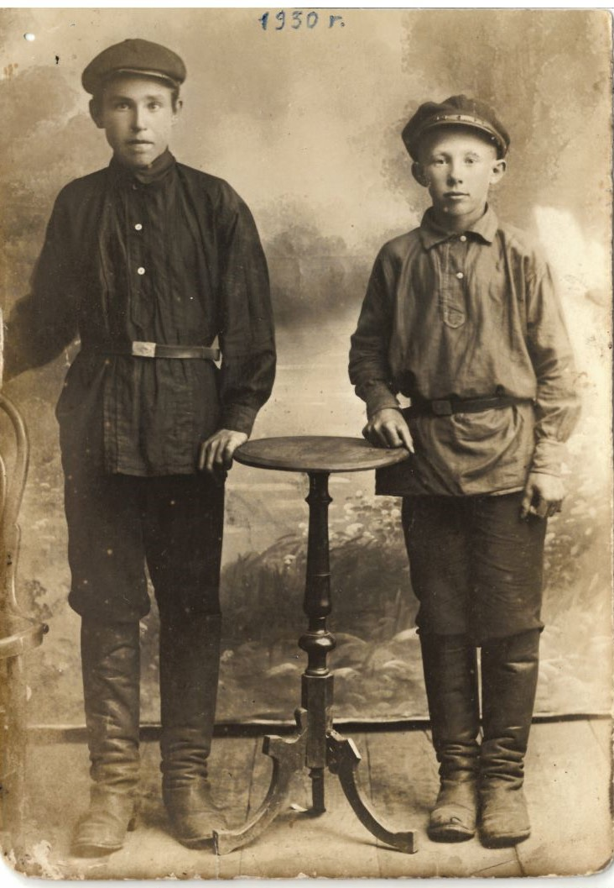

На фото справа мой дед - Черняев Петр Никитович (тут ему 12 лет), слева - его двоюродный брат - Григорий (?), которому 16 лет.

На обороте фото надпись: мне было 12 лет, а Грише 16 лет мы снялись (имеется ввиду - сфотографировались).